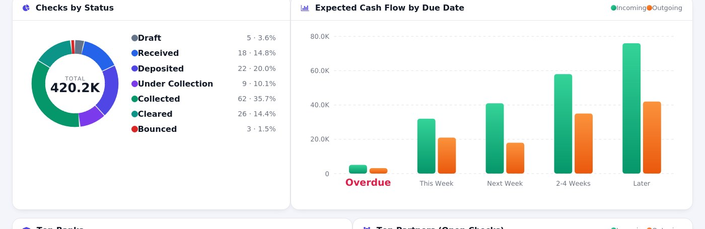
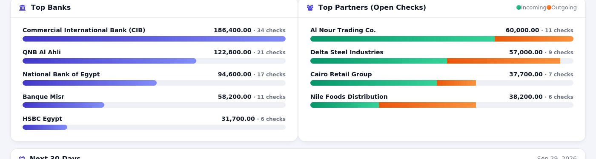
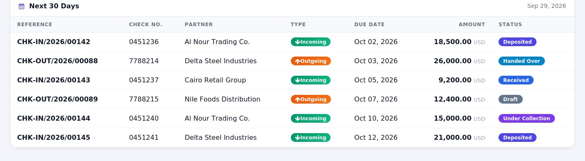

Track every incoming and outgoing check from receipt to bank clearing — with automatic accounting, real check printing, and a live, multi-company dashboard.
KPI cards, a status breakdown, expected cash flow by due date, top banks and partners, and everything due in the next 30 days — each element is clickable and drills straight into the filtered list. Switch between companies from the built-in company selector and the whole dashboard, including the drill-down lists, follows along.




| 🔄 |
Full lifecycle per direction Incoming: Draft → Received → Deposited → Under Collection → Collected. Outgoing: Draft → Handed Over → Cleared. Bounce or cancel from any stage. |
| 🏦 |
Smart bank & journal autofill Each bank carries its own accounting journal and account number — picking a bank on a check fills both automatically (still editable). |
| 📒 |
Automatic, reversible journal entries Notes receivable / payable, checks under collection, bank charges on bounce, and reconciliation with the settled invoices or bills — no manual entries needed. |
| 🖨️ |
Real check printing Position fields over a bank's pre-printed leaf, or use Full Check Design mode for a complete check face on blank paper, in common preset sizes or a custom size and font. |
| 🔢 |
Separate, per-company sequences Incoming (CHK-IN) and outgoing (CHK-OUT) checks each get their own numbering, automatically scoped per company. |
| 🔤 |
Amount in words (Tafqeet) In Arabic or English, generated automatically on the printed check. |
| 🌓 |
Dark mode & scrollable dashboard The dashboard adapts to your color scheme automatically and scrolls cleanly on any screen size. |
| 🔐 |
Role-based permissions User / Manager access groups enforced both on menus and on sensitive actions (Bounce, Cancel, Reset to Draft) — not just in the UI. |
| 🏢 |
Built for multi-company Every model, security rule and accounting entry is company-scoped, and the dashboard follows whichever company (or companies) you have active. |